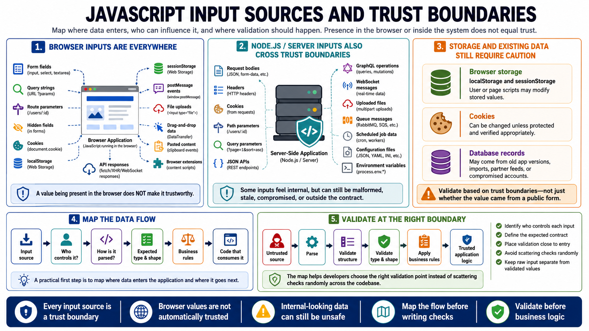

JavaScript Input Sources
Connecting to LMS... Progress: in progress

Narration
Input sources in JavaScript span both the browser and the server. In the browser, visible form fields are only the beginning. Query strings, route parameters, hidden fields, cookies, localStorage, sessionStorage, postMessage events, file uploads, drag-and-drop data, pasted content, browser extensions, and responses from APIs can all influence application behavior. A value being present in the browser does not make it trustworthy.
On the server side, Node.js applications commonly process request bodies, headers, cookies, path parameters, query parameters, JSON APIs, GraphQL operations, WebSocket messages, uploaded files, queue messages, scheduled job data, configuration files, and environment variables. Some of these inputs may feel internal, but they can still be malformed, stale, compromised, or outside the current application contract.
Storage values require caution. Data in localStorage or sessionStorage can be modified by the user or by scripts running in the page. Cookies can be changed unless they are protected and verified appropriately. Database records may have originated from older versions of the application, partner feeds, imports, or compromised accounts. Validation should focus on trust boundaries, not only on whether a value came from a public form.
A practical first step is to map where data enters the application and where it goes next. For each input source, identify who controls it, how it is parsed, what type and shape are expected, what business rules apply, and which code consumes it. That map helps developers choose the right validation point instead of scattering checks randomly across the codebase.